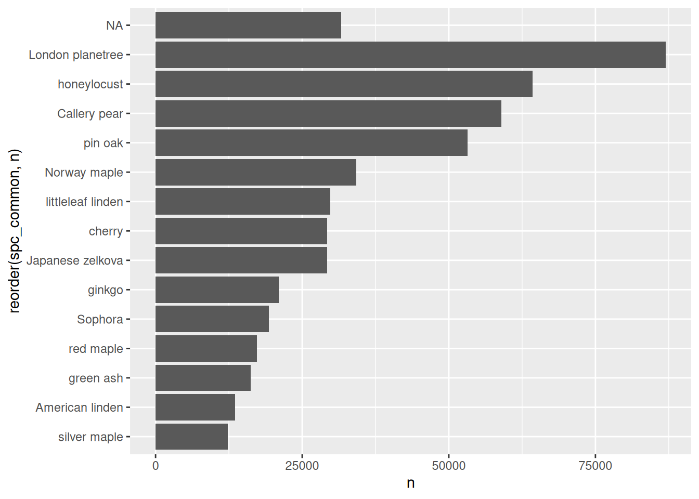
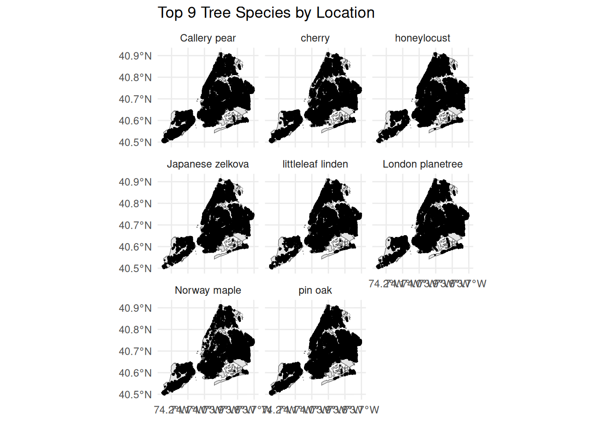
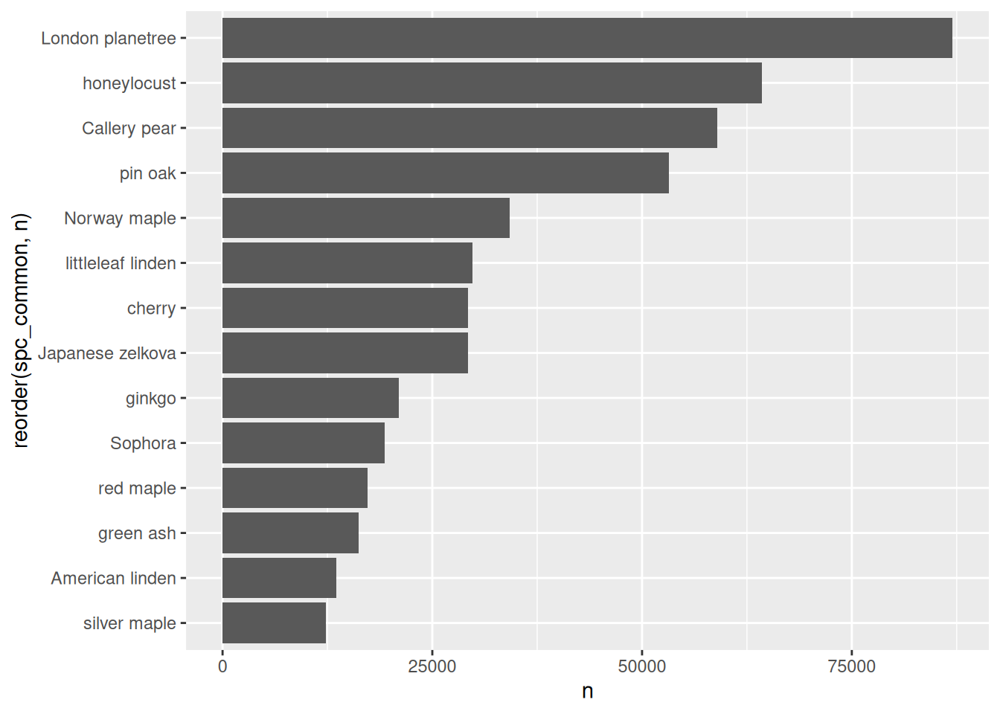
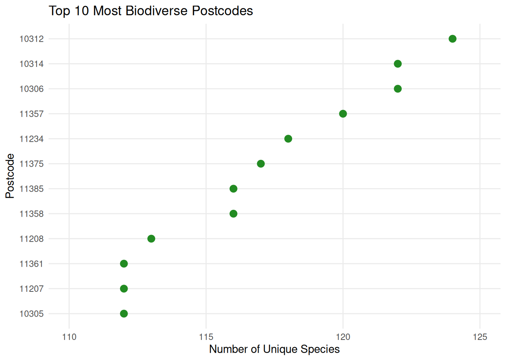
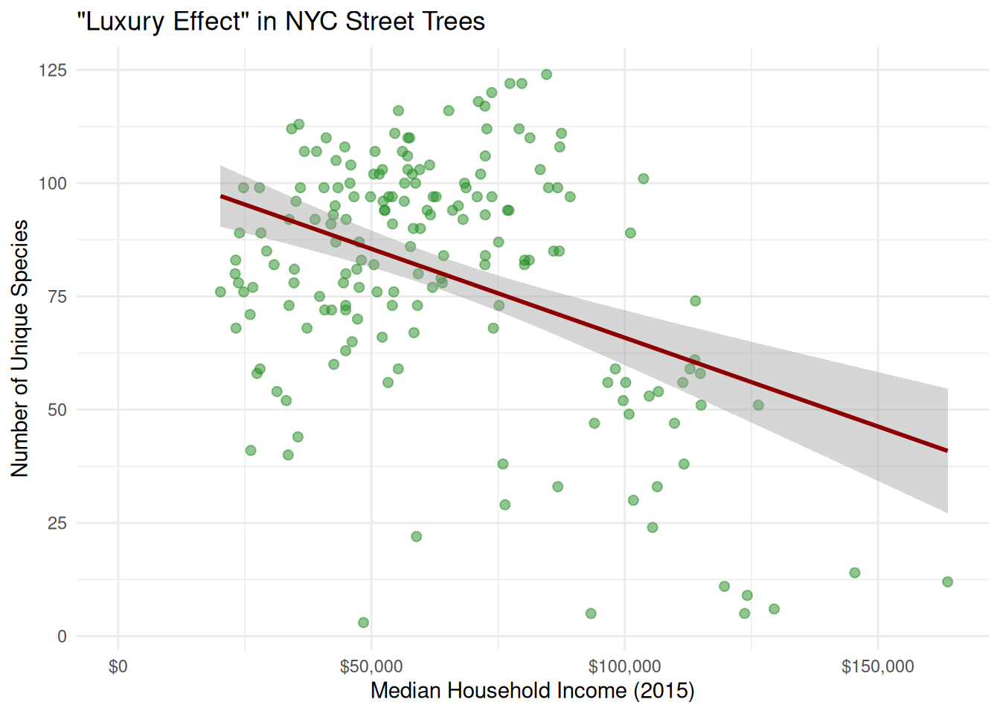
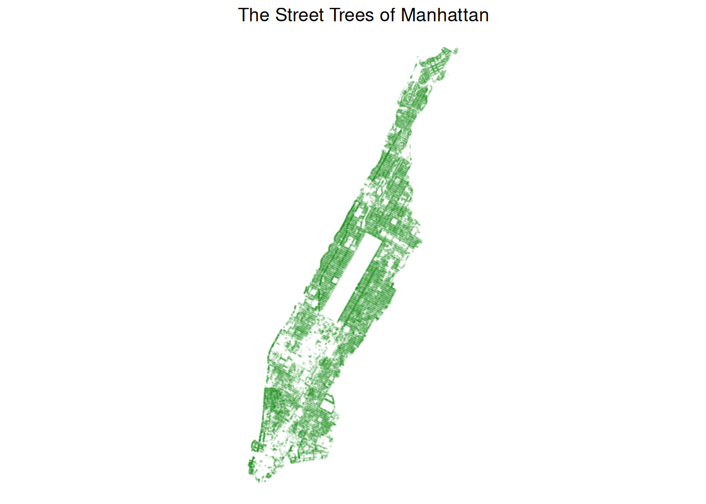
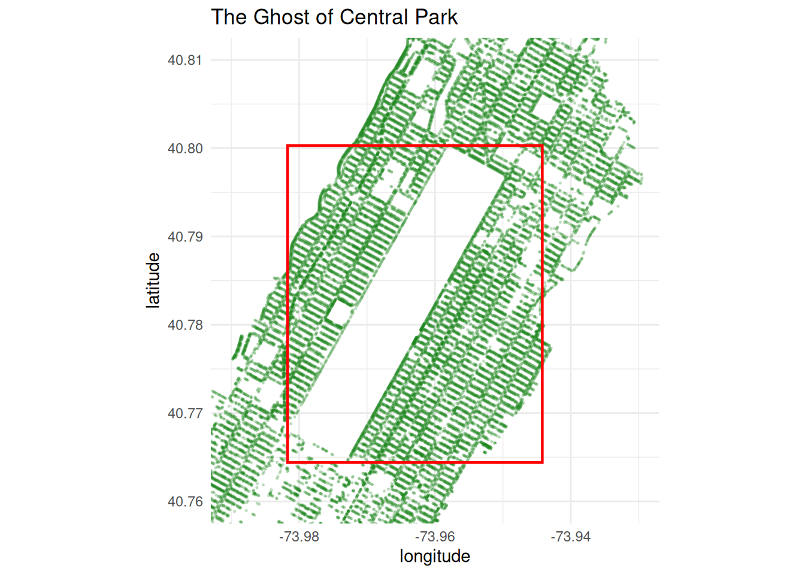
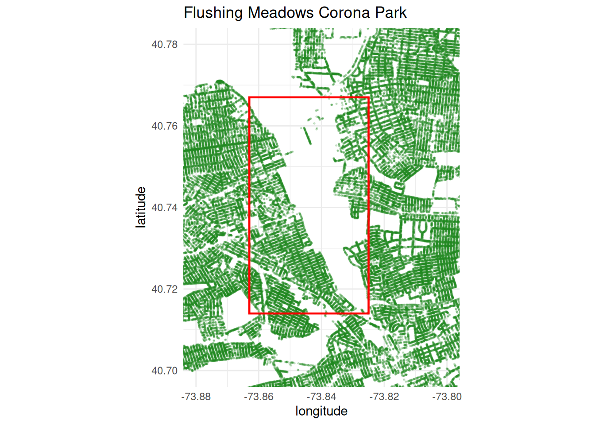
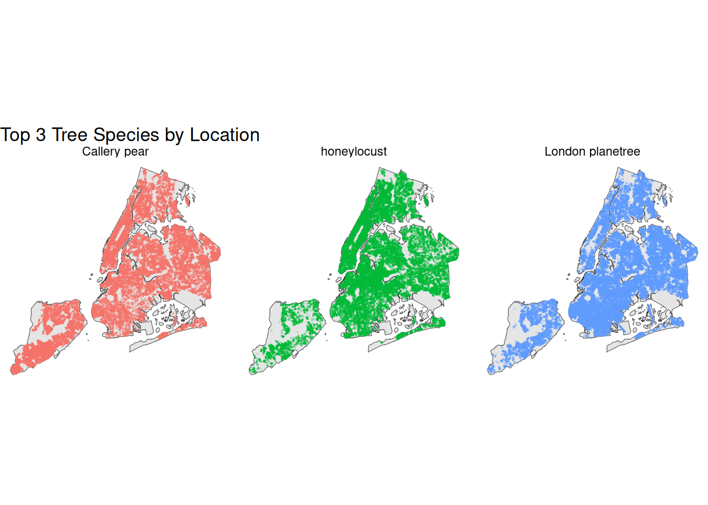
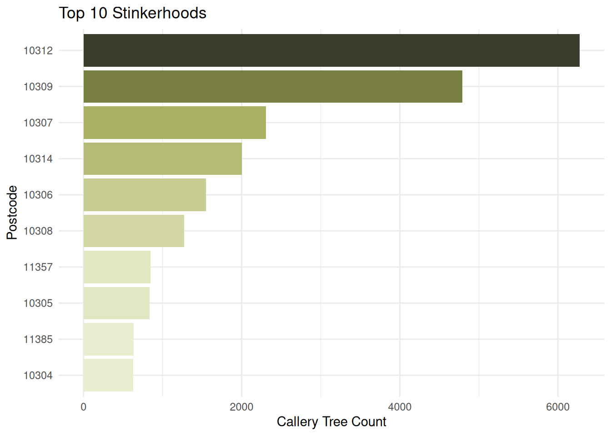

library(tidyverse)
library(sf)
library(redav)
library(tidycensus)7 2015 Street Tree Census
Alexander Liu
7.1 Introduction
New York City is known for its iconic skyline, but it is also home to more than 680,000 trees. I chose to explore this dataset because NYC is one of the major cities with the most extensive canopies. We often walk past these trees without considering the value that they provide to the city; they improve the air quality, manage stormwater, and provide psychological support to millions of residents. My goal was to use data to uncover specific patterns of the life that brings our city streets to life.
7.2 Data
7.2.1 Description
The data is sourced from the 2015 Tree Census, where thousands of volunteers mapped every tree in the city between May 2015 and October 2016. It is a snapshot census that takes place every 10 years, and the next census cycle for 2025 is currently in progress.
The raw data is provided by NYC Open Data in the form of an 88 megabyte CSV. The full dataset includes 45 columns (variables) and 683,788 rows (trees). To ensure that the dataset would be small enough to function in the class repository, I converted it into a .rds file and slimmed it down to 8 vital variables:
tree_dbh: Diameter of the tree, measured at approximately 54” / 137cm above the ground.status: Indicates whether the tree is alive, standing dead, or a stump.health: Indicates the user’s perception of tree health. (Good, Fair, Poor)spc_common: Common name for species, e.g. “red maple”postcode: Five-digit zipcode in which tree is locatedborocode: Code for borough in which tree point is located: 1 (Manhattan), 2 (Bronx), 3 (Brooklyn), 4 (Queens), 5 (Staten Island)latitude: Latitude of point, in decimal degreeslongitude: Longitude of point, in decimal degrees
7.2.2 Missing Value Analysis
df <- readRDS("data/2015_Tree.rds")
# head(df)From looking through the data, I noticed that the NA’s were not showing up as NA’s, and instead as empty whitespace strings. I have to convert these empty strings to traditional NA’s.
# converting empty strings to traditional NA's
df <- df %>%
mutate(across(where(is.character), ~na_if(., "")))
# filter only missing values to avoid cluttering
df_missing <- df %>%
select(where(~ any(is.na(.))))
plot_missing(df_missing, percent = FALSE)
The result of the missing analysis is that there are three main patterns. Pattern 2 looks interesting, taking up almost every single missing case. Digging deeper into the data, I notice that these cases are all cases where the tree is either dead or a stump, noted in the status variable.
df_missing2 <- df %>%
filter(!(is.na(spc_common) & is.na(health)))
plot_missing(df_missing2, percent = FALSE)
Removing the second pattern, I find that there are only five instances of missing spc_common (probably an unidentifiable tree) and two cases of missing health. In the grand scheme of things, these six trees will not impact our data significantly, so I am going to go forward with these six cases removed, while keeping pattern 2.
df_cleaned <- df %>%
filter(!(is.na(spc_common) & !is.na(health))) %>%
filter(!(!is.na(spc_common) & is.na(health)))7.3 Results
df_cleaned %>%
count(spc_common, sort = TRUE) %>%
head(15) %>%
na.omit() %>%
ggplot(aes(x = reorder(spc_common, n), y = n)) +
geom_col() +
coord_flip()
Simple exploratory bar chart of the top 15 tree species.
7.3.1 Which Postcodes Have the Most Variety of Trees?
borough_map <- c("1" = "Manhattan", "2" = "Bronx", "3" = "Brooklyn", "4" = "Queens", "5" = "Staten Island")
all_postcode_variety <- df_cleaned %>%
group_by(postcode) %>%
summarize(unique_count = n_distinct(spc_common, na.rm = TRUE)) %>%
mutate(postcode = as.character(postcode))
top_10postcode_variety <- all_postcode_variety %>%
slice_max(unique_count, n = 10)
ggplot(top_10postcode_variety, aes(x = unique_count, y = fct_reorder(as.character(postcode), unique_count))) +
geom_point(color = "forestgreen", size = 3) +
theme_minimal() +
theme(panel.grid.minor = element_blank()) +
scale_x_continuous(limits = c(110, 125)) +
labs(
title = "Top 10 Most Biodiverse Postcodes",
x = "Number of Unique Species",
y = "Postcode"
)
Interestingly, four of the top 10 postcodes are close to each other and on Staten Island (10312, 10314, 10306, and 10305). These neighborhoods have larger front yards and less urban development in general, allowing a larger variety of trees to survive. Likewise, the five Queens postcodes belong to areas with low-density residential housing. (I actually went to Forest Hills High School in 11375.) Notably, there is not a single postcode in the top 10 that belongs to the Bronx or Manhattan.
I hypothesize that wealthier neighborhoods will have more biodiversity. This is a well-documented phenomenon known as “the luxury effect”.
# census_api_key("42c4d4cca61f60497f62fdd136bd56304cb24fd3", install = TRUE)
# Joining with our tree dataset will isolate the NYC postcodes.
nyc_income <- get_acs(geography = "zcta", variables = "B19013_001", state = "NY", year = 2015) %>%
select(postcode = GEOID, median_income = estimate)
variety_income_joined <- all_postcode_variety %>%
inner_join(nyc_income, by = "postcode") %>%
filter(!is.na(median_income))
variety_income_filtered <- variety_income_joined %>%
filter(median_income < 200000)
ggplot(variety_income_filtered, aes(x = median_income, y = unique_count)) +
geom_point(color = "forestgreen", alpha = 0.5, size = 2) +
scale_x_continuous(labels = scales::dollar_format(), limits = c(0, NA)) +
geom_smooth(method = "lm", color = "darkred") +
theme_minimal() +
labs(
title = "\"Luxury Effect\" in NYC Street Trees",
x = "Median Household Income (2015)",
y = "Number of Unique Species"
)
It turns out that this is not the case in NYC. The biodiversity generally increases in median income postcodes below $80,000, but the trend does not continue above that. There are also two outliers that I discarded with median incomes of $250,000, probably the Upper East Side and Tribeca.
7.3.2 Why Are There No Points in Central Park?
manhattan_trees <- df_cleaned %>%
filter(borocode == 1)
ggplot(manhattan_trees, aes(x = longitude, y = latitude)) +
geom_point(size = 0.05, alpha = 0.05, color = "forestgreen") +
coord_fixed(1.3) +
theme_void() +
labs(title = "The Street Trees of Manhattan")
After creating some exploratory graphs, I noticed that there are no points in Central Park. Although we all know that it is the greenest part of Manhattan, it appears as a void of white.
ggplot(manhattan_trees, aes(x = longitude, y = latitude)) +
geom_point(size = 0.3, alpha = 0.2, color = "forestgreen") +
annotate("rect", xmin = -73.9817, xmax = -73.9442, ymin = 40.7644, ymax = 40.8003, color = "red", fill = NA, size = 0.8) +
coord_fixed(ratio = 1.3, xlim = c(-73.99, -73.93), ylim = c(40.76, 40.81)) +
theme_minimal() +
labs(title = "The Ghost of Central Park")
queens_trees <- df_cleaned %>%
filter(borocode == 4)
ggplot(queens_trees, aes(x = longitude, y = latitude)) +
geom_point(size = 0.3, alpha = 0.2, color = "forestgreen") +
annotate("rect", xmin = -73.863, xmax = -73.825, ymin = 40.714, ymax = 40.767, color = "red", fill = NA, size = 0.8) +
coord_fixed(ratio = 1.3, xlim = c(-73.88, -73.80), ylim = c(40.70, 40.78)) +
theme_minimal() +
labs(title = "Flushing Meadows Corona Park")
Other parks in other boroughs also share this phenomenon. It turns out that these trees are not included because they do not belong to “Street Trees” and instead belong to “Park Trees.”
7.3.3 How are the Top 3 Tree Species Distributed?
boroughs <- read_sf("data/nyc_boroughs/nybb.shp")
top3_species <- df %>%
count(spc_common, sort = TRUE) %>%
slice_head(n = 3) %>%
pull(spc_common)
points_sf <- df %>%
filter(spc_common %in% top3_species) %>%
select(longitude, latitude, spc_common) %>%
na.omit() %>%
st_as_sf(coords = c("longitude", "latitude"), crs = 4326)
ggplot() +
geom_sf(data = boroughs) +
geom_sf(data = points_sf, aes(color = spc_common), size = 0.05, alpha = 0.2) +
facet_wrap(~spc_common) +
theme_void() +
theme(legend.position = "none") +
labs(title = "Top 3 Tree Species by Location")
From my research, the Callery Pear tree seems to be more common in Staten Island and suburban areas because of how quickly it grew and its beautiful white flowers. The London Planetree is more abundant in Manhattan and upper Brooklyn because it was the go-to tree for 20th-century urban planners. Finally, the Honey Locust is more common in the more industrial areas like south Brooklyn and Long Island City because of its resilience in high-stress environments.
However, people quickly realized that Callery Pears were squalid. What is the “stinkiest” neighborhood?
stinky_summary <- df_cleaned %>%
filter(spc_common == "Callery pear") %>%
group_by(postcode) %>%
summarize(pear_count = n()) %>%
arrange(desc(pear_count)) %>%
slice_max(pear_count, n = 10)
stinky_pal <- c("#EAEED0", "#A1A956", "#8A9147", "#3C3C2A")
ggplot(stinky_summary, aes(x = pear_count, y = reorder(as.character(postcode), pear_count), fill = pear_count)) +
geom_col(show.legend = FALSE) +
scale_fill_gradientn(colors = stinky_pal) +
theme_minimal() +
labs(title = "Top 10 Stinkerhoods",
x = "Callery Tree Count",
y = "Postcode")
8 out of the 10 postcodes are in Staten Island, with 10312 and 10309 clearly leading the pack in terms of Callery Pear tree count.
7.4 Conclusion
This analysis revealed that while wealthier neighborhoods often enjoy more greenery, they do not necessarily have the most biodiversity. The most diverse canopies are found in low-density residential zones in Queens and Staten Island, as opposed to the high-income areas in Manhattan or Brooklyn. The concerning visible white holes in Central Park and other large parks remind us that data is not always complete and each set has its own characteristics. The 2015 Tree Census only captures the canopy of 2015, and does not reflect any replants or removals. After the 2025 Tree Census comes out, we can conduct a longitudinal study to track the evolution of the trees on the city streets. Furthermore, questions could be asked about diameter and wellness of species, which I unfortunately did not have the chance to get to.